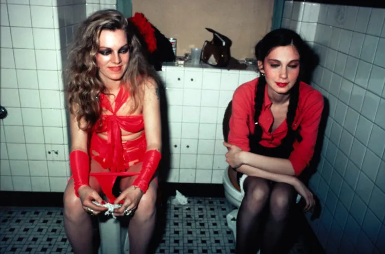
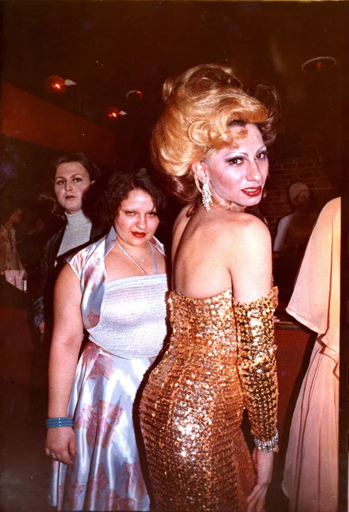
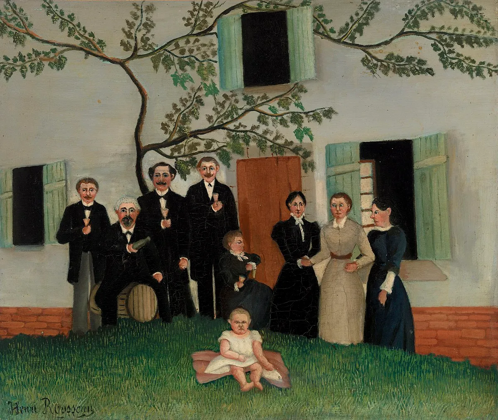

Must we move beyond the familial perspective?
"The family is a temporary and fortuitous association that death promptly dissolves."
The family is not an eternal community, still less a chosen one, Balzac tells us; it is a contingent, "fortuitous" association. It exists only as long as the individuals who compose it live and sustain it. A single death – symbolic or literal – is enough to undo it. From where, then, does this sacred status we attribute to it arise? From where does the illusion of its permanence come, if it is merely a matter of circumstance?
We always build the premises of our identity through a need for control, an impulse to believe in an authority, and a desire – or at least a subconscious injunction – to conform to a morality. Fear is an emotional catalyst of community; fear fights heterogeneity and transforms rules into morals. The fear of exclusion is the genesis of our emotional identity. From our earliest years, we learn to shrink ourselves in order to pass through the doors imposed by the world. As Nietzsche suggests, a moment always comes when we loosen ourselves from this grip, when we grow angry with it: when we kill this moral "beast". Family morality, inheritance, appear then only as a supplement, never a development.
To step out of these systems is to initiate a gradual awakening of the mind, a responsible reclaiming of our becoming, an "act" against the empire of ressentiment.
Yet the traumas of intimacy freeze this movement. We remain stuck between the drama and the desire to hate in order to survive. These inner catastrophes take hold of our entire body; they are not contained within memory but inscribed in our flesh. Trauma does not fade; it settles within us, keeps watch over us, ceaselessly.
How can one expel the wound when the body's memory continues to replay the drama?
Whether trauma exists or not, the person grows only by purifying themselves of the private structure they carry within. To step away from the familial project – from that which, through inheritance, claims to define a trajectory – is to return to the primacy of the person, to rediscover the true hierarchy of values, to reunite at last what the family has tended to separate or banish.
Others, the public sphere, collective intelligence sketch out genuine therapeutic repertoires. Man exists but lives better when expelled from himself; the person is an interior that needs an exterior.
At fourteen, the American photographer Nan Goldin left her family home in Massachusetts to discover everything that overflowed from the neatly pressed frame of a bourgeois household. It was then that she photographed her "tribe": her muses, homosexuals and drag queens, her companions of nights out, of heroin.
The family remains haloed with a presumption of innocence, a presumption of love, of benevolence. Under the guise of care, the family imposes a norm, an implacable rhetoric. This paternalistic hold is cloaked in soothing gestures: it reassures, repairs, targets, bolts things back together – as though a mechanical tenderness were enough to set everything right. Yet this posture trivialises affect; it neutralises it. The family does not heal; at times it opens immeasurable wounds, it stuns, damages, destroys – 44% of physical suffering takes place within the family – INSEE figure, 2025. It "protects", yet it disarms.
In Du côte de chez Swann, young Proust waits, anguished, for his mother to come and say goodnight. This ritual becomes a heartbreaking ordeal:
"My sole consolation when I went up to bed was that Mamma would come to kiss me once I was in my room. But this goodnight lasted so short a time, she went back down again so quickly, that the moment I heard her coming up […] it heralded the one that would follow, when she would have left me, when she would be downstairs again."
The family is the place of lack. It shapes our most persistent wounds, those that replay themselves in our loves, our friendships, our works. Proust unfolds the affective texture of this bond: the family is a laboratory of feeling, a structure, never a moral refuge one must one day obey. The words that the family circulates with the outside world abolish a field of possibility. For family speech is never innocuous: it circulates, slinks about, it is a deposit of language, a sediment that exerts its silent prediction. What is "said" inside ends up sketching what we believe possible outside. The family produces a muffled violence when it is not a shocking one: it re-architects, re-assembles, and re-arranges compulsively; the re- does not invent, it reiterates the "we" in order to undermine the "I". The intimate cell is often a canvas without perspective, a space where lines do not recede but contract, collapse, and draw the gaze back to the centre, to an assigned role.
Henri Rousseau, The Family — Rousseau is almost entirely unaware of traditional perspective; he is self-taught. The planes are stacked rather than opening out, the faces flattened. This collage-like quality creates a dreamlike, almost illusory atmosphere.
To mourn one's family may be the final stage of individuation, after the great protest of adolescence; to understand that we are poorly seated in the place assigned to us. In adulthood, we perhaps finally sense that we can "dis-individuate" ourselves from the neuroses of our progenitors, love in our own manner, beyond the injunctions of blood. Misrecognition constitutes a form of forgiveness; it is not clad in naïve optimism. Forgiveness here is not moral but a shared horizon between memory and forgetting.
The moment of imputability – the ability to take responsibility for what derives from oneself – marks a surpassing: becoming oneself as another, unmoored from biology and open to other filiations.
To break away from inherited patterns is perhaps to rediscover a political freedom: to be a citizen is to gain access to the universal foundation, without being confined to the particularity of one's existence, one's cultural weight, one's traditions.
Does citizenship not require a time offset from the social, familial, and economic spheres?